Trovy: From designer to design engineer
How I went from handing engineering Figma files to shipping production code at a fintech startup: first the marketing homepage, then Renovate with Trovy, an AI renovation planner for homeowners.
- Role
- Founding Designer
- Industry
- Fintech · Home equity
- Designs circa
- 2025–2026
- Employment type
- Full-time
- Built with
- HTML/CSS/JS, AI coding agents [+ stack]
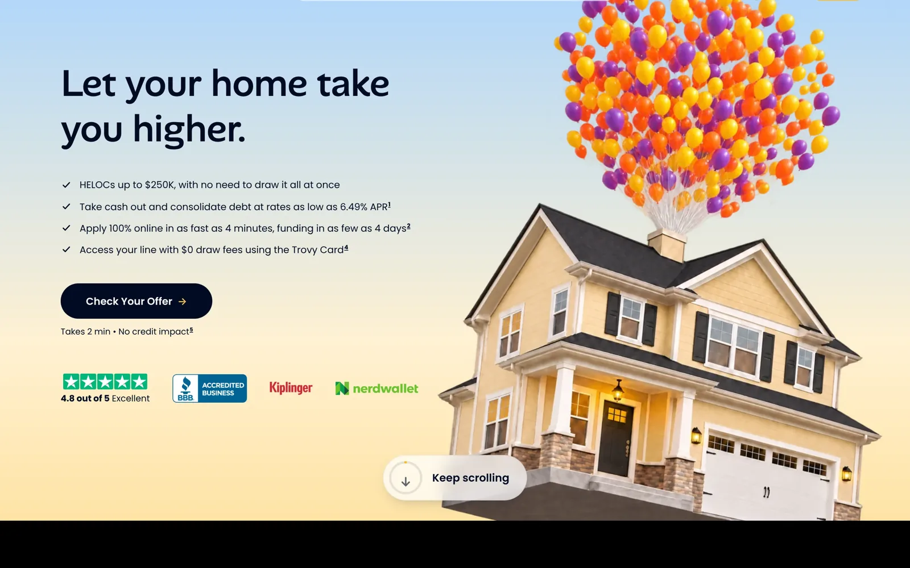
Trovy: From designer to design engineer
How I went from handing engineering Figma files to shipping production code at a fintech startup: first the marketing homepage, then Renovate with Trovy, an AI renovation planner for homeowners.
- Role
- Founding Designer
- Industry
- Fintech · Home equity
- Designs circa
- 2025–2026
- Employment type
- Full-time
- Built with
- HTML/CSS/JS, AI coding agents [+ stack]
Trovy puts home equity on a Mastercard.
A HELOC is one of the cheapest ways to borrow, but it usually means weeks of paperwork and a draw request every time you need money. Trovy is a fully online HELOC, $25k to $250k, with the line on a card: swipe it, move cash to your bank, or lock a balance into a fixed-rate FixedPay plan. Approval in as little as 4 minutes, funding in as few as 4 business days.
I joined as the founding designer and shipped the brand, the card, the application, the account dashboard, the marketing site and the ads. This case study covers what came after that: the work I built myself.
One designer, one engineering team, one queue.
Trovy’s engineers work on the lending product: application, underwriting, servicing, compliance. Everything else, the marketing site and new homeowner features, waited behind it. In [month] 2025 I started building those myself with AI coding agents and handing engineering working code instead of mockups.
The deliverable changed.
Figma files became running code. The prototype is the spec; engineering reviews a build, not a redline.
The loop got shorter.
Design, build and test happen in the browser in the same session. Motion and states are designed where they run.
The split is deliberate.
I own the marketing site and the Homeowner Toolkit end to end. The core lending product stays with engineering.
The homepage
The live homepage explains a HELOC: rates, speed, trust badges, a comparison table, an FAQ. It is a page about a loan.
The card is what makes Trovy different, and on this page it is one image among many.
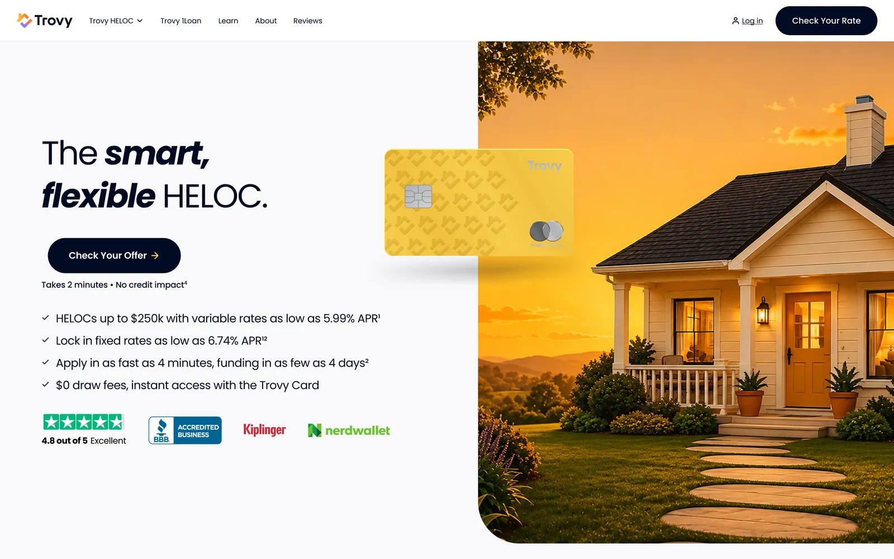
The redesign is a scroll-driven story about the card.
One pinned stage, scrubbed by scroll: the house lifts off, the card comes out of the wallet, taps, pays for cash out and debt, then earns the perks. The page shows the product doing things instead of listing them. Process, reviews and FAQ follow as a normal page.
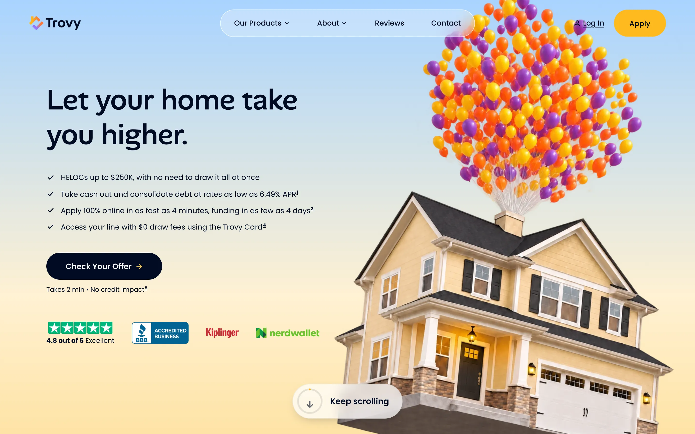
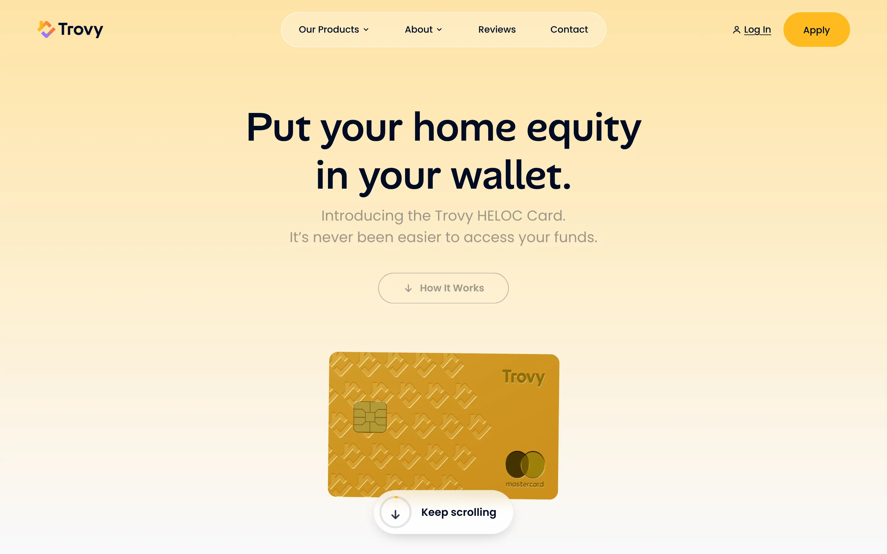
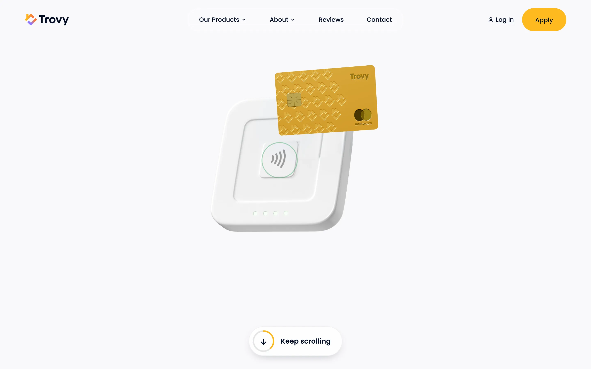
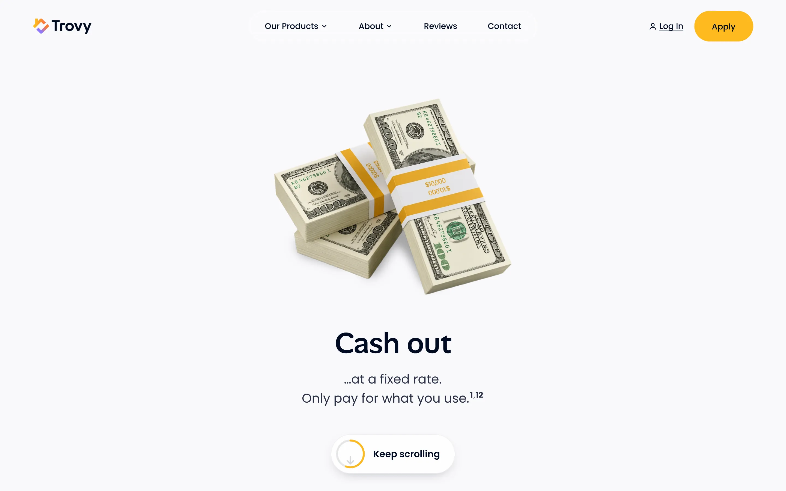
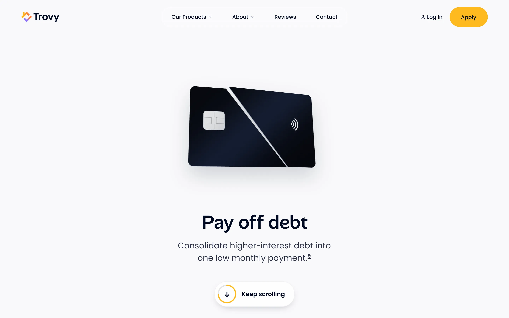
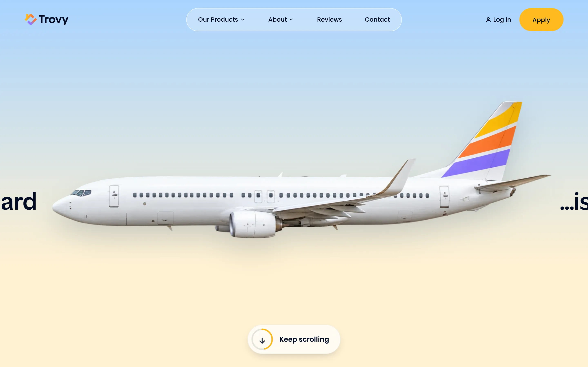
Built in code, not Figma.
Designed directly in HTML, CSS and JavaScript: scroll-scrubbed timelines, a 3D card in three.js, a video hero and the responsive layout, in one file.
[Status: in review with Trovy / launched in ____.]
Live build · scroll inside the frame
Renovate with Trovy
Renovation is the biggest reason homeowners tap their equity, and the point where they are least sure what they want, what it costs and whom to hire.
Renovate, part of Trovy’s Homeowner Toolkit, takes a homeowner from a photo of a room to an AI-generated plan, a rendered design, a cost estimate and a shopping list, with the Trovy line as the way to pay for it.
It is live for cardholders behind a release flag. The redesign on these slides is in review.
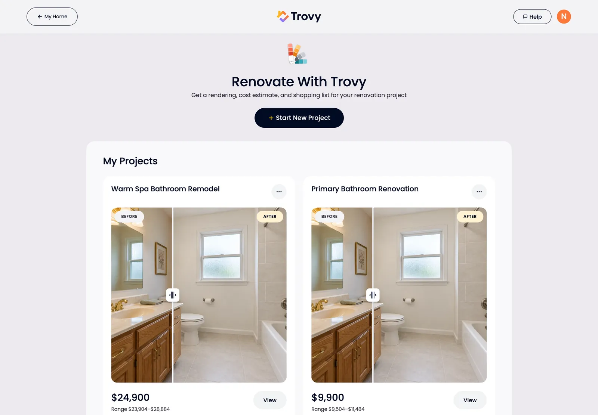
Five steps, one chat.

1Start with your room
Add a photo and say what should change.

2Plan it with Renault
A few quick questions: scope, style, budget.

3Approve the plan
Renault writes a project plan. Edit it or generate now.

4See your new room
Drawn on your own photo, with a before/after slider.

5Price it and shop it
Materials and labor, each product pinned and linked.
The same build at 1440 and 390.
Desktop gets three columns: project sections on the left, the design and its version stack in the middle, Renault on the right.
The estimate sits next to Take Out Cash. That is where Trovy earns its place in the flow.
On mobile the same components stack, and Renault becomes a sheet.
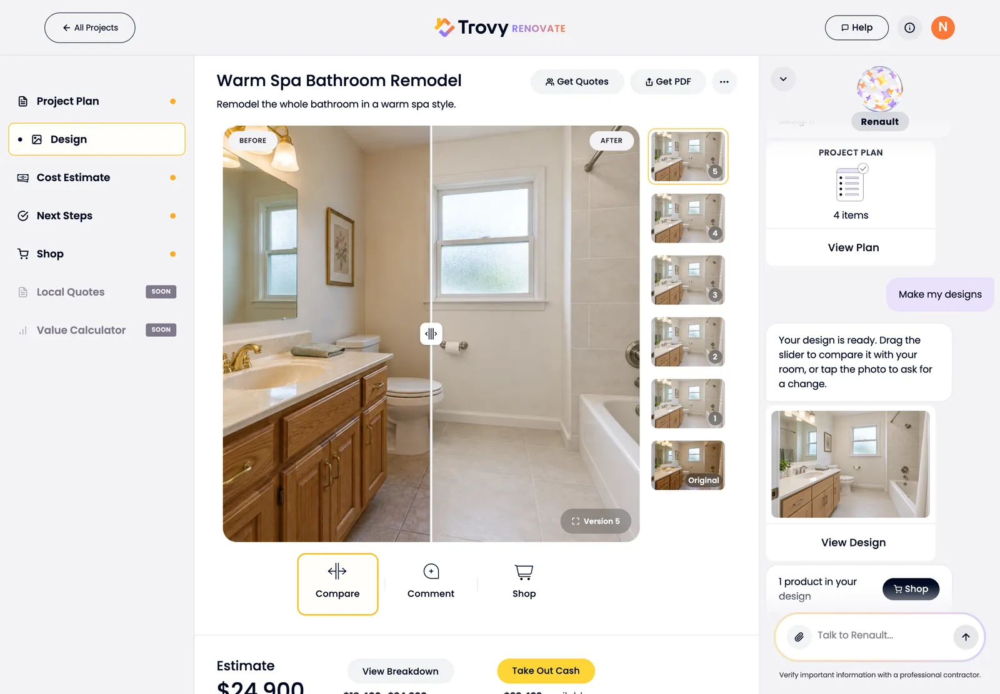
Details
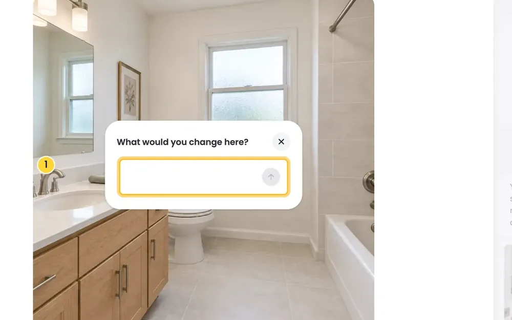
Tap to change
Tap anywhere on the photo to pin a change. The pin goes to Renault as a comment, and the next version answers it.
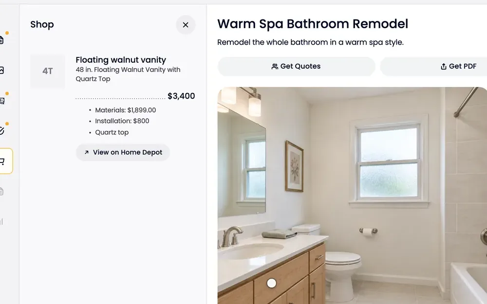
Shop from the render
Every product in the design is numbered on the photo and listed with materials, installation cost and a store link.
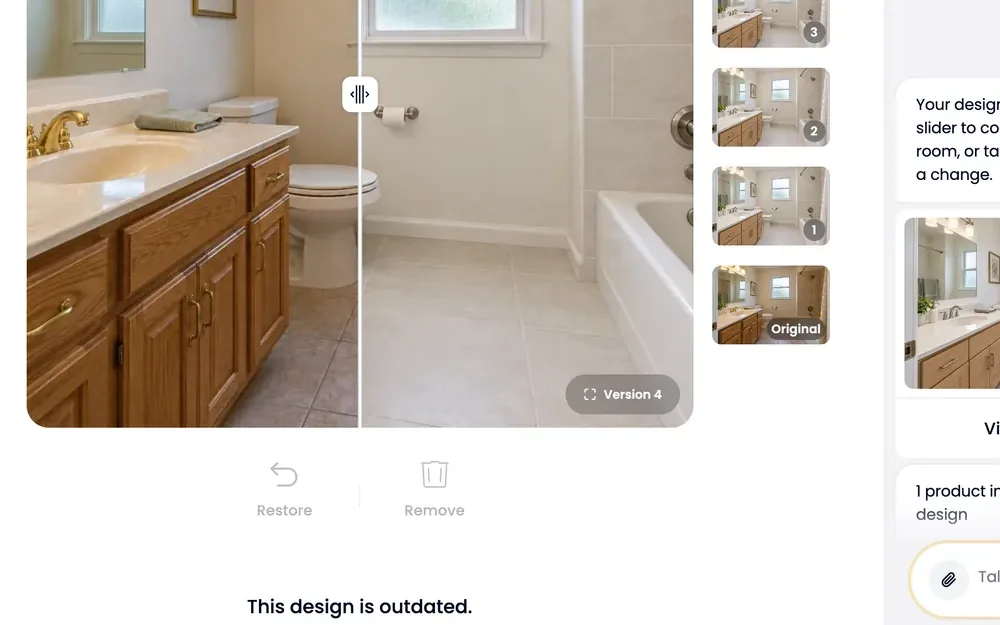
Versions, kept
Every generation is saved. Older versions are marked outdated and can be restored or removed.
How it was built
Code as the design tool
Layouts, states and motion were designed in the running app with AI coding agents, not in Figma first.
Desktop and mobile together
Every change was checked at 1440 and 390 in the same pass, so neither size is a port of the other.
A visual-QA rig
A test setup with a sample bathroom project renders every screen at both sizes after each change. The screenshots on this page come from it.
Behind a release flag
Shipped to cardholders behind a flag, so Trovy controls rollout, and the redesign goes through review before it reaches everyone.
What changed in how I work
The prototype is the spec.
Engineering reviews a build. Fewer handoff questions, and the edge cases are already in the code.
Motion gets designed where it runs.
Scroll timelines and transitions were tuned in the browser, not described on a slide.
The queue is gone.
Marketing and Toolkit work no longer waits for engineering time. The lending product still does, and that is the right split.
Next for Renovate: contractor quotes, a contractor marketplace and a home-value calculator for each project.